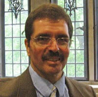
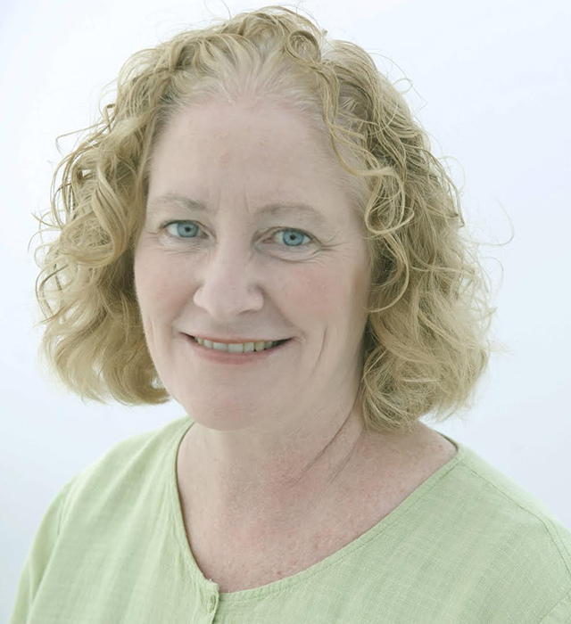
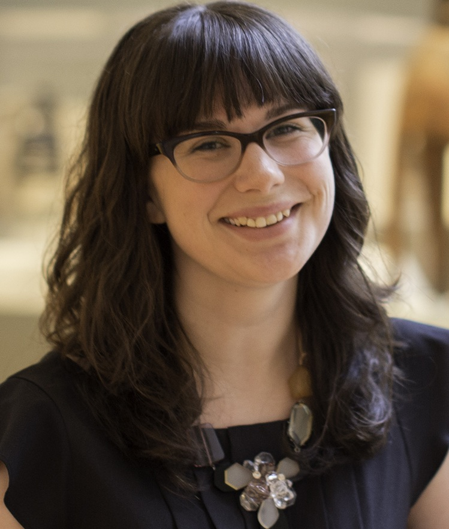

Under Construction! Come back after winter break for updates!
Staff First Gen Stories

Jim Wice
Director of Disability Services, 504/ADA Coordinator
jwice@wellesley.edu
When I think back about exploring colleges and going to college while
being first-generation, I had some luck to help balance some of the
misfortunes. A good friend of mine whose parents had completed college
let me tag along while my friend visited the schools he was interested
in attending. I don’t think my parents or I knew that this was part of
the search process. We never spoke about where I might go to school, how
much it might cost or really anything else on the subject.
I never really knew how much money my father earned at work. I always
assumed we were probably middle-class with a bit of a tight budget with
4 children. When any of us tried to get him to fill out financial
paperwork, he was always hesitant and rarely did it. Neither of us knew
much about the financial aid process, or maybe he did and didn’t want to
disclose, but on applying to schools I discovered that I was accepted
at most of them but that my father hadn’t completed the financial paper
work. The one school my friend had not visited and which we were always
told to put down as a backup, was where I attended school, the University
of Massachusetts at Amherst.
I have no regrets going to UMass Amherst but at the time I was accepted
and agreed to go, the school had the nickname Zoo Mass. When my teachers
heard where I was going to school, they appeared disappointed. Again, I
didn’t know the difference between one school or another and hadn’t seen
UMass and assumed that the most affordable school with the most academic
options was the best place for me. Again, no financial aid to me meant
that I was paying for school myself.
My family drove me out to school and helped unload everything in my
residence hall. I was fortunate that a high school friend who moved off
to Chicago at the end of our sophomore year and I were going to be
roommates. In some ways he and I both were fortunate that his sister was
already there as a Junior. We really didn’t know what to do despite
having gone to orientation. I remember getting there before him, a day
or 2, and before the dining halls were open and not having a clue where
to get food or how to find out. If it wasn’t for his sister helping
us through the basics, I think we both would’ve been floundering a lot
more than we were.
I also don’t recall having much spending money and never really asked my
parents for any. I know that I had worked throughout high school and
had some savings but I think my thoughts were that my dining hall bill
was covered and my housing was paid for so what else did I need money
for. I definitely was on a low budget that 1st year. Without financial
aid, I didn’t have work-study monies or information about getting jobs
so I really didn’t think much about doing so. My 1st priority was to do
well in classes. I remember signing up for an intramural tennis compet
ition and getting beat up by the best player on campus which dampened
my enthusiasm to play in a formal format. There was plenty to do going
to sporting events which was covered by our student IDs, gyms and
doing social things with others on campus.
Many other things occurred over my years at UMass Amherst again making
it a fortunate accident to have been there. The experience though has
made me passionate about helping those who are also first-generation and
might benefit from the knowledge I gained.

Anne Manning
Administrative Solutions Technologist
amanning@wellesley.edu
I am an administrative solutions technologist in Library and Technology
Services. I began working at Wellesley College in 1987. I am named
after my grandmother who came to Newton, MA from Ireland in the 1920’s.
Because of her, I have dual citizenship with Ireland. My grandmother
worked as a housekeeper and cook. She had six daughters and died
suddenly when my mother was 14. My mother didn’t get to attend college
because of responsibilities she had caring for her younger sisters.
I am one of five children in my family and the first to go to college.
I received my BA from UMass Amherst, where I was elected to Phi Beta
Kappa. I also completed a project management certification program
at Bentley University. I believe strongly in giving back to my
alma mater. I volunteer for alumni and athletics organizations
and mentor students. I was very proud when both of my sons chose
to attend and graduated from UMass Amherst.
I’ve been a lifelong advocate for public education, and am passionate
about politics and global issues. I am a board member at the Cornell
University Institute for Internet Culture, Policy, and Law. I recently
completed a two-year term as the public policy coordinator for the
Massachusetts State Advisory Board of NASPA (Student Affairs
Professionals in Higher Education) and I’m now serving on the
Massachusetts Democratic Party Public Policy Subcommittee. I was a member
of the Education and Technology Subcommittee for the Commonwealth
Readiness Project, a statewide initiative to develop a ten-year
strategic plan for Massachusetts public education.

Liz Gardner
Public and Interpretive Programs Specialist
egardner@wellesley.edu
When I arrived in Poughkeepsie for my freshman year at Vassar College,
I had never heard the term “First Gen.” I knew that I had received a
significant scholarship to attend this prestigious liberal arts college,
but did not know that it was because of a progressive financial aid
policy later known as “need-blind.” I knew that it was special to be
the first person in my family to go to college, but as I embarked on my
college career, I did not anticipate the many struggles that I would face
being from a lower-middle class family and studying at an elite institution.
Working through these challenges made me a stronger person. They define
my identity and inform my teaching philosophy. As a museum educator,
I’m deeply committed to accessibility in art museums. I strive to create
learning experiences that welcome anyone to engage with art, regardless
of their class status, race, gender, sexual orientation, or faith. I
firmly believe that art museums should be spaces for everyone, despite
persisting beliefs in our society that museums are only for privileged
audiences. My experiences as a First Gen student inspire me to work
towards this kind of social change in the museum field.
I graduated from Vassar College with a BA in Art History, and later from
the Rhode Island School of Design with an MA in Teaching + Learning in
Art + Design, Museum Education track. I previously worked at the
Cincinnati Art Museum and currently work as the Public and Interpretive
Programs Specialist at the Davis Museum. In this position, I plan
public programs and manage the Davis Student Guides, Davis Museum Student
Advisory Committee (DMSAC), and the Davis Summer Internships.
I grew up in a rural town south of Boston, and currently reside in Providence,
RI, with my partner, Alex, and two ridiculous but adorable cats.
Student First Gen Stories
Under Construction! Come back after winter break for updates!